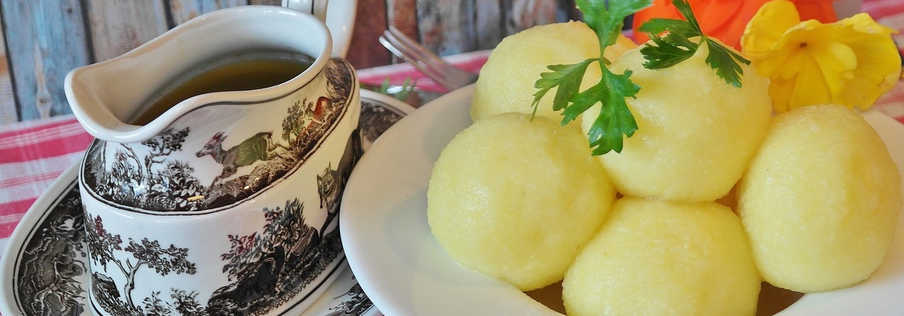
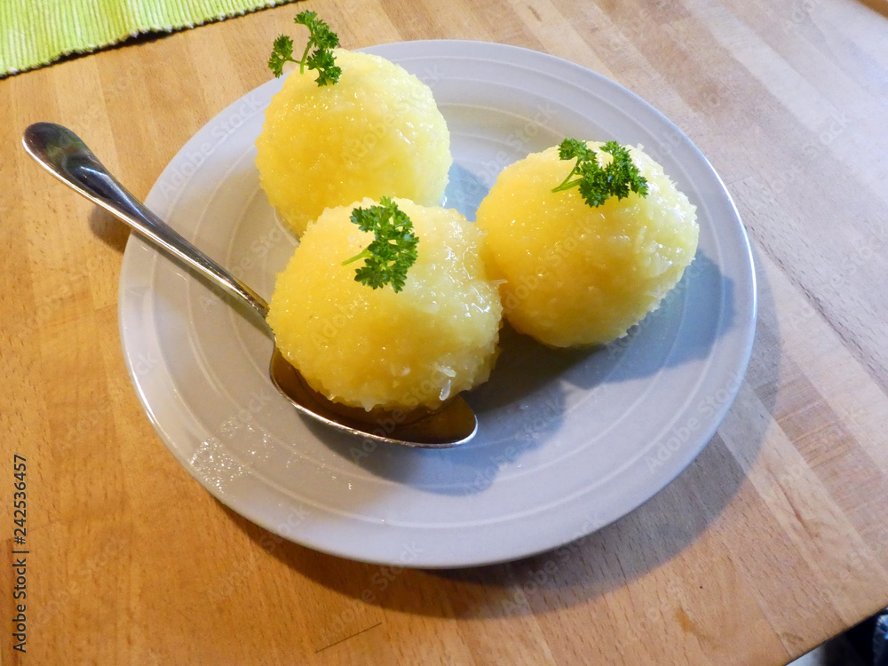
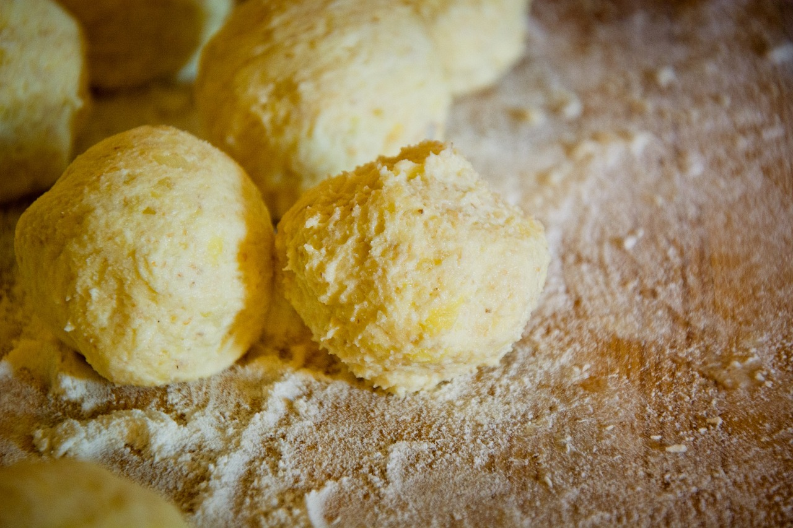
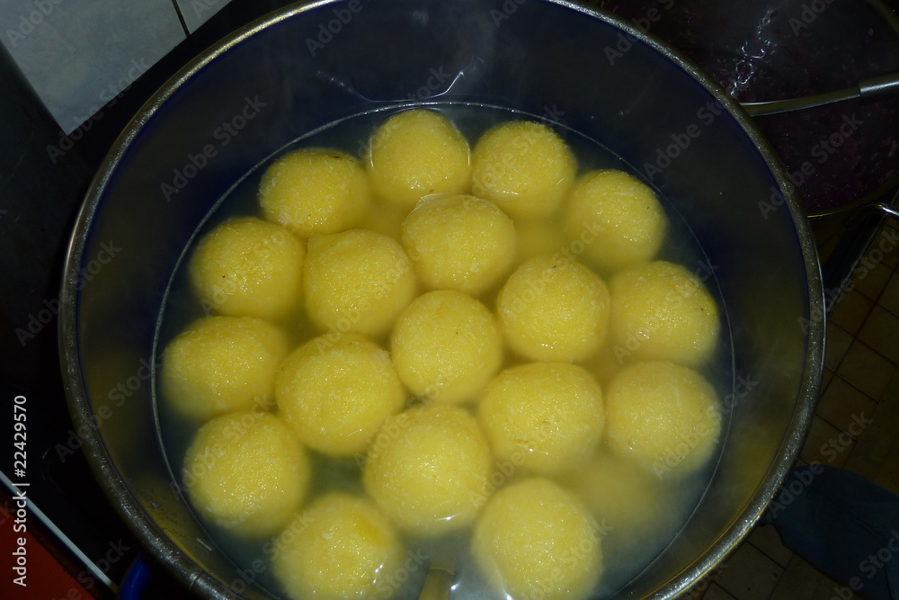
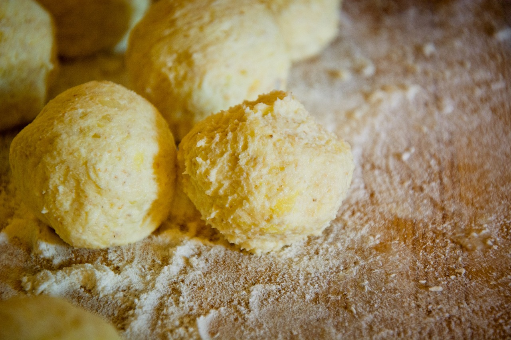
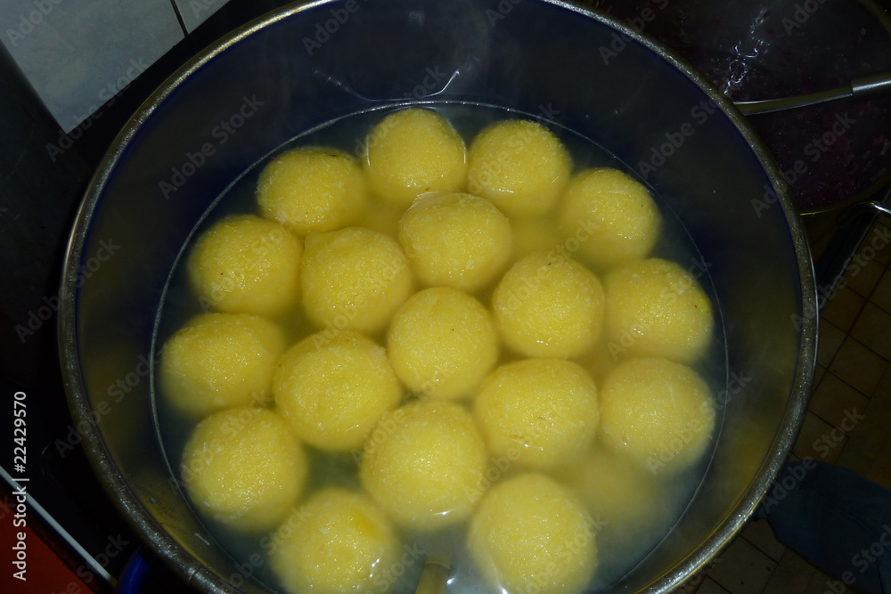
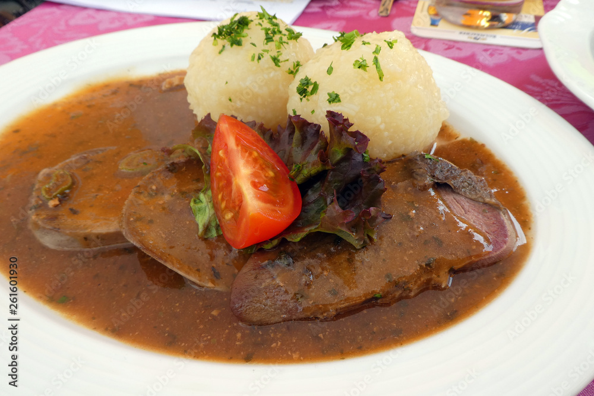
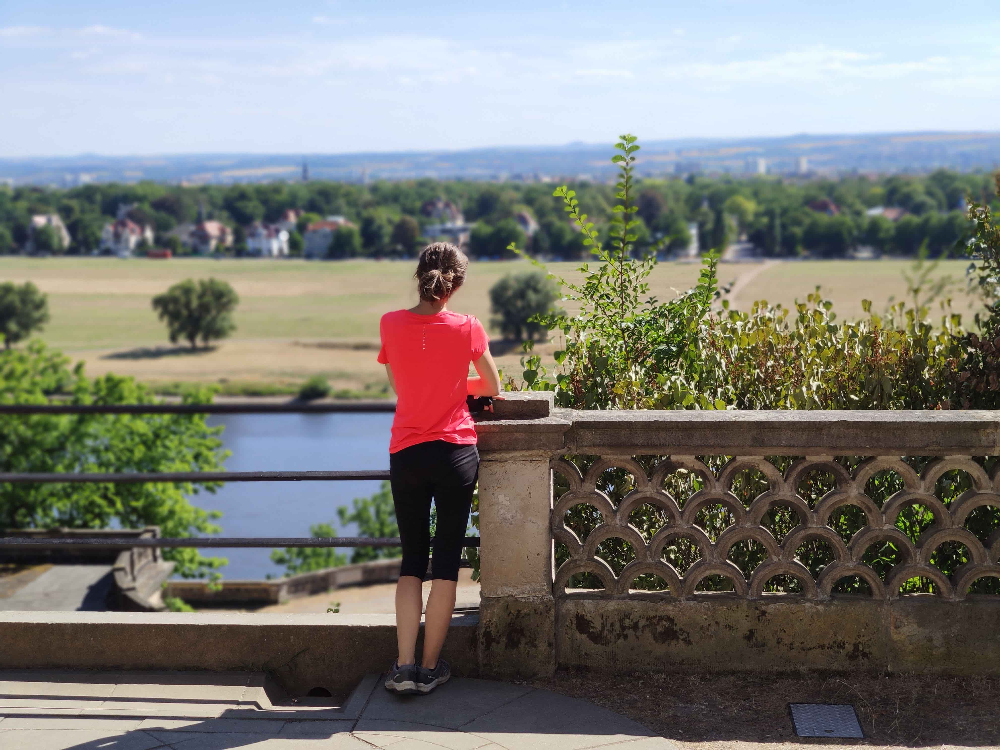

Kloß
aneb proslulost hornofrancké kuchyně

O mně
Jmenuji se Hana Pavlová a miluji Horní Franky. Prožila jsem zde část svého života a během té doby jsem prozkoumávala zdejší kulturu, tradice a samozřejmě i kulinářské umění. Jedním z nezapomenutelných zážitků bylo objevení tajemství přípravy franckých kloßů, tradiční speciality této oblasti, která byla vyhlášena za nejtypičtější ze všech hornofranských jídel. S láskou a zvídavostí jsem se naučila mistrovství této kulinářské dovednosti od místních kuchařů a odvezla si s sebou nejen vzácné recepty, ale i poznání o významu tohoto pokrmu pro Horní Franky.
O kloßech

Francké kloßy, často nazývané také francké knedlíky, mají hluboké kořeny v historii regionu Franckých Zemí v Německu. Tato jedinečná pochoutka vznikla jako reakce na potřeby lidí ve venkovských oblastech, kde byly brambory běžnou plodinou. Bramborová mouka se stala základním stavebním kamenem kloßů, a to díky své schopnosti vytvořit tuhou a sýrovatou strukturu.
Přestože francké kloßy mají skromný původ, dnes jsou považovány za jedno z nejlepších jídel na světě z důvodu jejich všestrannosti a bohaté chuti. Kloßy jsou jako prázdné plátno, které může kuchař oslnivě vybarvit podle své fantazie. Mohou být podávány jako hlavní chod, příloha nebo dokonce jako sladký dezert, což z nich činí skvělou volbu pro každou příležitost. Jejich jedinečná chuť a textura si získala srdce milovníků jídla po celém světě a jejich sláva dál roste.
Receptura
Ingredience:
- 600 g brambor
- 150 g bramborové mouky
- 1 vejce
- 1 lžička soli
- máslo (na potření rukou)
Tento základní recept vám umožní připravit lahodné francké kloßy, které zaručeně potěší vaše chuťové buňky a přivedou vás k nezapomenutelnému zážitku z tradiční německé kuchyně. Samotná příprava vyžaduje pečlivost a správnou techniku. Následující průvodce vám ukáže, jak připravit tyto lahodné kuličky a dosáhnout dokonalé konzistence a chuti.
Postup:
 



Výběr správných ingrediencí
Prvním krokem k přípravě franckých kloßů je správný výběr ingrediencí. Základem je bramborová mouka, která poskytuje konzistenci a strukturu. Přesné množství a kvalita brambor jsou klíčové pro dosažení dokonalého výsledku. Kvalita mouky hraje také klíčovou roli při přípravě franckých kloßů. Jemnost a čistota mouky ovlivňují texturu a chuť kloßů.
Zpracování brambor a těsto
Po vybrání vhodných brambor začíná proces jejich zpracování. Brambory se nejprve musí uvařit ve slupce, nechat zchladnout, poté se oloupou, nastrouhají a vymačkají, aby se získala hrubá bramborová kaše. Tato kaše se poté smíchá s bramborovou moukou a dalšími přísadami, jako je vejce a sůl, až vznikne homogenní těsto, které má být přiměřeně lepivé.
Tipy a triky pro perfektní francké kloßy:
Pamatujte si, že při přípravě franckých kloßů je důležité dodržovat správné poměry ingrediencí a pečlivě dodržovat postup. Experimentujte s různými technikami formování kloßů a výběrem příloh, abyste dosáhli ideálního výsledku. Buďte trpěliví a užívejte si procesu vaření, který vás přiblíží k chuti tradiční francké kuchyně.
Servírování

Servírování franckých kloßů otevírá dveře k nekonečným možnostem gastronomického dobrodružství. Tyto lahodné kuličky se skvěle doplňují různými druhy omáček, jako je například masová, houbová nebo smetanová omáčka, které podtrhují jejich bohatou chuť a texturu. Pro milovníky tradičních chutí mohou být kloßy servírovány s dušeným masem nebo s klasickým bramborovým gulášem. Na druhou stranu, pokud hledáte něco odvážnějšího, můžete je podávat s exotickými omáčkami nebo dokonce vytvořit kreativní pokrmy jako jsou francké kloßy s rajčatovou bazalkovou omáčkou a mozzarellou. Možnosti jsou opravdu nekonečné, a to je to, co francké kloßy dělá tak unikátními a oblíbenými po celém světě.
Kontakt

Ráda sdílím svou vášeň pro francké kloßy a jsem nadšená, že mohu předat své zkušenosti a cenné recepty a tipy dál. Jestliže máte zájem o další informace, recepty nebo jednoduše jen chcete prozkoumat svět franckých kloßů, neváhejte mi napsat email nebo mě kontaktovat přes Facebook. Objevujte nové možnosti a inspirujte se kulinářskými dobrodružstvími!